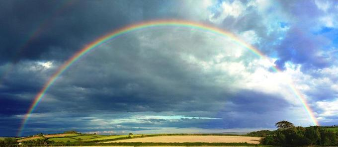
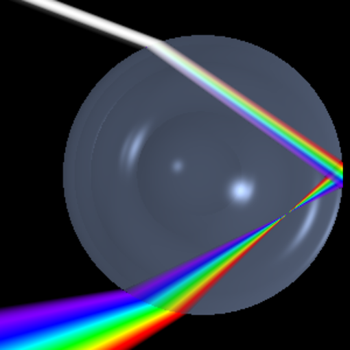
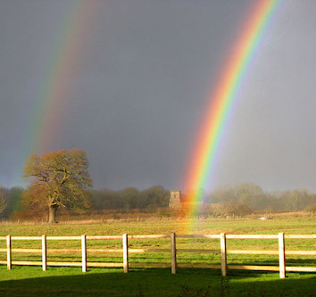

Rainbows

Everyone loves a rainbow! They have
impressive scale, great beauty and an air of mystery. If you
chase after one it will recede from you, so you can never find
the pot of gold at its end. They also provide a wonderful
opportunity for both art and science. The colours are always
in the same order: red on top, then orange, yellow, green,
blue, indigo and violet - ROYGBIV - though you may struggle to
distinguish the difference between the last two. Children will
enjoy drawing or painting one - coloured pencils are easiest -
and this will help them to recognise that the order of the
colours is not random.
At some times rainbows arc much higher in the sky than they do
at others. To understand why this should be, you need some
scientific understanding of what is going on. A rainbow is
formed when sunlight bounces inside a raindrop and reflects
back to you. So, you always need to have your back to the sun
to see one. What is going on is shown in the diagram below. White light is actually
made up from a combination of many different colours (all the
"colours of the rainbow"). When light enters water (or glass)
at an angle it is bent, in a process called refraction.
However, blue light is bent more than red light, so the
colours are separated out to form a spectrum. If this
is happening in a raindrop then the light can bounce off the
back of the drop and come back at a particular angle (about 41
degrees from the incoming sunlight) with its colour separated.
So, the rainbow would actually be a circle about a point
directly opposite the sun, but of course the sun is above the
horizon, so the centre of the rainbow is below the
opposite horizon and you see only the part of the circle which
is above the ground. The lower in the sky the sun is, the
bigger the arc of the rainbow. The largest rainbows will
therefore be seen early or late in the day.
You can make your own rainbow! All you need do on a sunny day
is to stand with your back to the sun and sprinkle water
droplets from a fine spray on a hose into the air ahead of
you. You may even be able to see that the rainbow forms a full
circle centred on the point directly opposite the sun. You can
also make a rainbow indoors if the sun is shining. To do this
you need a bowl of water and a small mirror, which will fit
inside it. Prop the mirror up so that it is tilted, with some
of it sticking out of the water, but most of it submerged.
Then place your rainbow-maker on a sunny windowsill, so that
the sun shines through the water onto the mirror and hold a
sheet of white paper or card above the bowl where it can
"catch" the rainbow. Try different distances above the bowl to
get the best result. This may also work in a darkened room
with a bright torch, but the results are unlikely to be as
good as using sunlight.
If you are lucky, you
may sometimes see a double rainbow, as shown in the picture on
the left. The outer rainbow is much dimmer than the main bow,
and so is only likely to be visible when the main rainbow is a
very bright one. Notice that the colours in the second bow are
reversed, with red on the inside. This outer rainbow
is produced by light which reflects twice off the inside of
the raindrops, rather than just once. The extra reflection
reverses the colours and also loses a lot of light, which
explains why it is so much fainter.